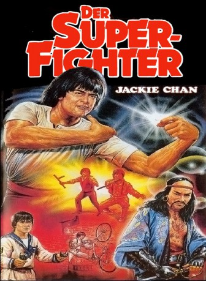

#2788 Der Superfighter
Alternativ: Project A (Englischer Titel)
 
 IMDB-Wertung: 7.4 / 10
IMDB-Wertung: 7.4 / 10  Metascore: 0
Metascore: 0 
Jahrelang haben Dragon und seine Freunde der Marineeinheit “Coast Guard” verzweifelt gegen eine Horde von Piraten gekämpft, die Handelsschiffe ausraubten und anschließend versenkten. Als auch ihre gesamte Flotte den Piraten zum Opfer fällt, wird die “Coast Guard” aufgelöst und als reguläre Polizeieinheit im Stadtgebiet eingesetzt. Hier finden sie endlich einen ersten Hinweis, der sie direkt zu den wirklichen Drahtziehern führt. Ein ausgeklügelter Plan soll die Piraten und ihre Hintermänner endgültig zur Strecke bringen…
Jahr: 1983
Dauer: 106 Minuten
FSK: 16
Land: Hong-Kong Studio: Splendid FilmTonspuren:
Untertitel: Deutsch,
Auflösung: 1080p (1920x816) Größe: 7833 MB
Genre: Action, Komödie
Regisseur:  Jackie Chan,
Jackie Chan,  Sammo Kam-Bo Hung
Sammo Kam-Bo Hung
Drehbuch: Jackie Chan, Jack Maeby, Edward Tang
Soundtrack: Siu-Tin Lai, Nicholas Rivera
Darsteller:
Datei: X:\HD-Eastern-Collections\Jackie Chan\Superfighter\Superfighter, Der (1983, FSK16, 1920x816).mkv seit 14.12.2015
Festplatte: HD Eastern+Western
 Es gibt insgesamt 58 Filme in der Gruppe 'HD-Eastern-Collections\Jackie Chan'
Es gibt insgesamt 58 Filme in der Gruppe 'HD-Eastern-Collections\Jackie Chan'